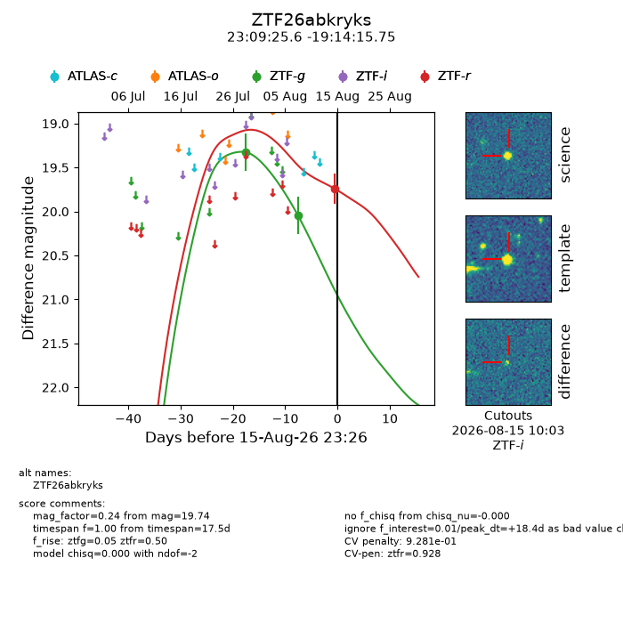
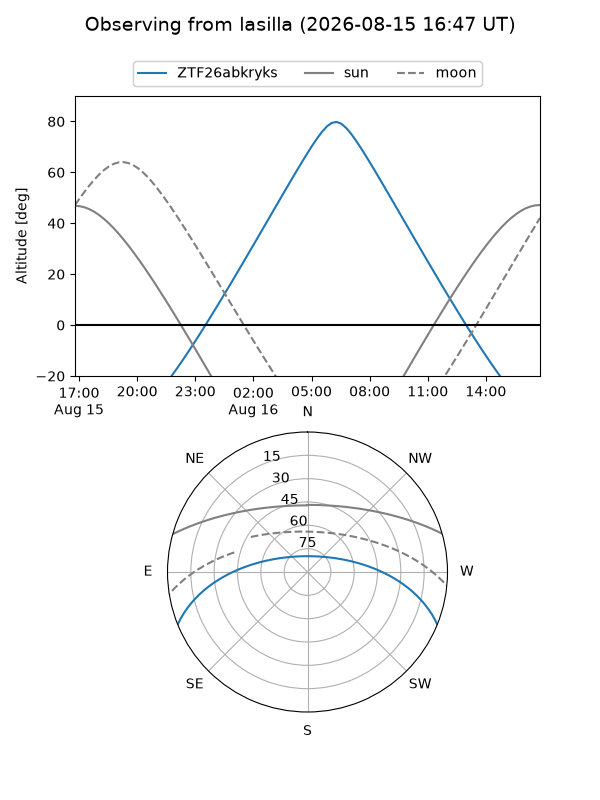
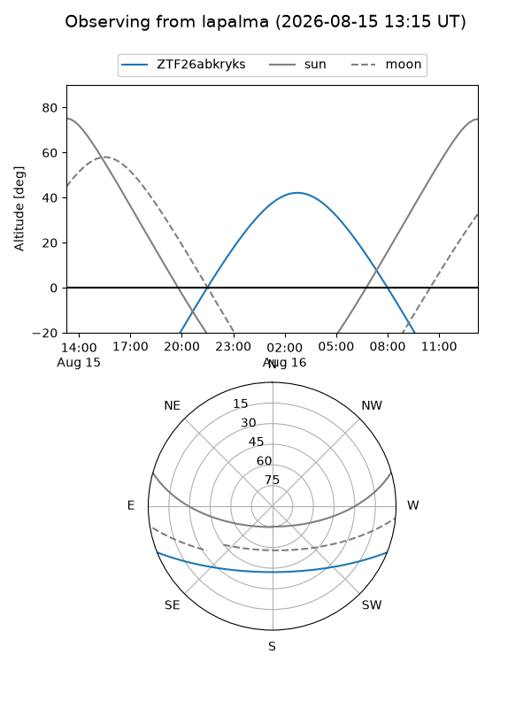
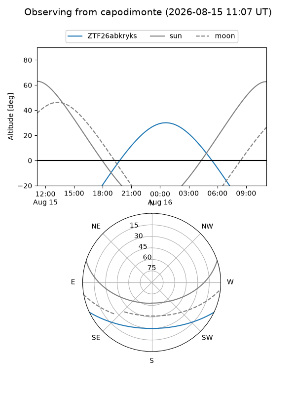
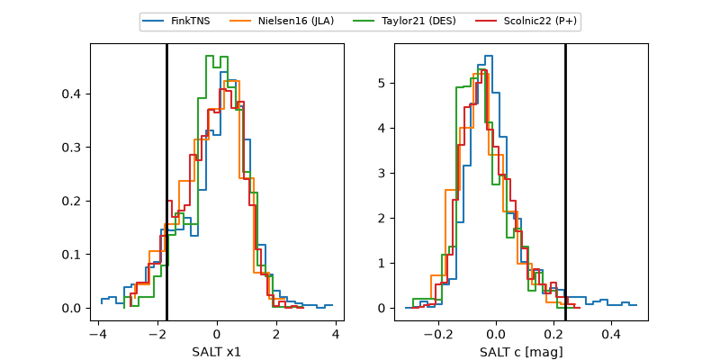

ZTF26abkryks
Target ZTF26abkryks at 2026-08-16 11:27
Aliases and brokers:
FINK-ZTF: ztf.fink-portal.org/ZTF26abkryks
Lasair-ZTF: lasair-ztf.lsst.ac.uk/objects/ZTF26abkryks
ALeRCE-ZTF: alerce.online/object/ZTF26abkryks
Direct TNS query: direct search
alt names
ZTF26abkryks (ztf,fink_ztf)
Coordinates:
equatorial (ra, dec) = 347.3567,-19.23771
equatorial (HMS+DMS) = 23:09:25.60,-19:14:15.75
galactic (l, b) = (46.1301,-65.32051)
Flags:
peak dt: +18.8
likely cv: !!
Photometry:
last ztfg=20.04, ztfr=19.74
2 ztfg, 1 ztfr detections
Lightcurve

Visibility



Additional plots
